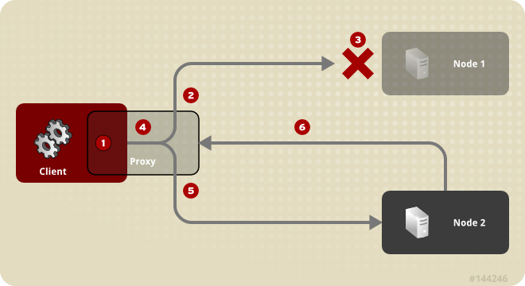
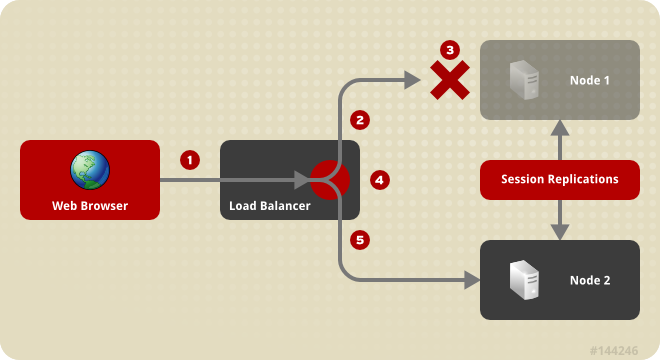

Chapter 20. Clustering Concepts
In the next section, we discuss basic concepts behind JBoss' clustering services. It is helpful that you understand these concepts before reading the rest of the Clustering Guide.
20.1. Cluster Definition
A cluster is a set of nodes that communicate with each other and work toward a common goal. In a JBoss Enterprise Application Platform cluster (also known as a “partition”), a node is an JBoss Enterprise Application Platform instance. Communication between the nodes is handled by the JGroups group communication library, with a JGroups
Channel providing the core functionality of tracking who is in the cluster and reliably exchanging messages between the cluster members. JGroups channels with the same configuration and name have the ability to dynamically discover each other and form a group. This is why simply executing “run -c production” on two Enterprise Application Platform instances on the same network is enough for them to form a cluster – each Enterprise Application Platform starts a Channel (actually, several) with the same default configuration, so they dynamically discover each other and form a cluster. Nodes can be dynamically added to or removed from clusters at any time, simply by starting or stopping a Channel with a configuration and name that matches the other cluster members.
On the same Enterprise Application Platform instance, different services can create their own
Channel. In a standard start of the Enterprise Application Platform 5 production server profile, two different services create a total of four different channels – JBoss Messaging creates two and a core general purpose clustering service known as HAPartition creates two more. If you deploy clustered web applications, clustered EJB3 SFSBs or a clustered JPA/Hibernate entity cache, additional channels will be created. The channels the Enterprise Application Platform connects can be divided into three broad categories: a general purpose channel used by the HAPartition service, channels created by JBoss Cache for special purpose caching and cluster wide state replication, and two channels used by JBoss Messaging.
So, if you go to two Enterprise Application Platform 5.0.x instances and execute
run -c production, the channels will discover each other and you'll have a conceptual cluster. It's easy to think of this as a two node cluster, but it's important to understand that you really have multiple channels, and hence multiple two node clusters.
On the same network, you may have different sets of servers whose services wish to cluster. Figure 20.1, “Clusters and server nodes” shows an example network of EAP instances divided into three sets, with the third set only having one node. This sort of topology can be set up simply by configuring the Enterprise Application Platform instances such that within a set of nodes meant to form a cluster the Channel configurations and names match while they differ from any other channel configurations and names match while they differ from any other channels on the same network. The Enterprise Application Platform tries to make this is easy as possible, such that servers that are meant to cluster only need to have the same values passed on the command line to the
-g (partition name) and -u (multicast address) start up switches. For each set of servers, different values should be chosen. The sections on “JGroups Configuration” and “Isolating JGroups Channels” cover in detail how to configure the Enterprise Application Platform such that desired peers find each other and unwanted peers do not.
20.2. Service Architectures
The clustering topography defined by the JGroups configuration on each node is of great importance to system administrators. But for most application developers, the greater concern is probably the cluster architecture from a client application's point of view. Two basic clustering architectures are used with JBoss Enterprise Application Platform: client-side interceptors (a.k.a. smart proxies or stubs) and external load balancers. Which architecture your application will use will depend on what type of client you have.
20.2.1. Client-side interceptor architecture
Most remote services provided by the JBoss Enterprise Application Platform, including JNDI, EJB, JMS, RMI and JBoss Remoting, require the client to obtain (for example, to look up and download) a remote proxy object. The proxy object is generated by the server and it implements the business interface of the service. The client then makes local method calls against the proxy object. The proxy automatically routes the call across the network where it is invoked against service objects managed in the server. The proxy object figures out how to find the appropriate server node, marshal call parameters, unmarshal call results, and return the result to the caller client. In a clustered environment, the server-generated proxy object includes an interceptor that understands how to route calls to multiple nodes in the cluster.
The proxy's clustering logic maintains up-to-date knowledge about the cluster. For instance, it knows the IP addresses of all available server nodes, the algorithm to distribute load across nodes (see next section), and how to failover the request if the target node not available. As part of handling each service request, if the cluster topology has changed the server node updates the proxy with the latest changes in the cluster. For instance, if a node drops out of the cluster, each proxy is updated with the new topology the next time it connects to any active node in the cluster. All the manipulations done by the proxy's clustering logic are transparent to the client application. The client-side interceptor clustering architecture is illustrated below:

|
Client communicates with proxy
|
|
Proxy sends request to Node 1
|
|
Node 1 goes offline
|
|
Proxy switches to Node 2
|
|
Proxy sends request to Node 2
|
|
Proxy downloads class dynamically from Node 2
|


20.2.2. External Load Balancer Architecture
The HTTP-based JBoss services do not require the client to download anything. The client (for example, a web browser) sends in requests and receives responses directly over the wire using the HTTP protocol). In this case, an external load balancer is required to process all requests and dispatch them to server nodes in the cluster. The client only needs to know how to contact the load balancer; it has no knowledge of the JBoss Enterprise Application Platform instances behind the load balancer. The load balancer is logically part of the cluster, but we refer to it as “external” because it is not running in the same process as either the client or any of the JBoss Enterprise Application Platform instances. It can be implemented either in software or hardware. There are many vendors of hardware load balancers; the mod_jk Apache module is an excellent example of a software load balancer. An external load balancer implements its own mechanism for understanding the cluster configuration and provides its own load balancing and failover policies. The external load balancer clustering architecture is illustrated below:

|
Browser sends a request.
|
|
Load Balancer forwards request to Node 1.
|
|
Node 1 goes offline.
|
|
Load Balancer switches to using Node 2.
|
|
Load Balancer forwards to Node 2.
|
A potential problem with an external load balancer architecture is that the load balancer itself may be a single point of failure. It needs to be monitored closely to ensure high availability of the entire cluster's services.
20.3. Load Balancing Policies
Both the JBoss client-side interceptor (stub) and load balancer use load balancing policies to determine to which server node a new request should be sent. In this section, let us go over the load balancing policies available in JBoss Enterprise Application Platform.
20.3.1. Client-side interceptor architecture
In JBoss Enterprise Application Platform 5, the following load balancing options are available when the client-side interceptor architecture is used. The client-side stub maintains a list of all nodes providing the target service; the job of the load balance policy is to pick a node from this list for each request. Each policy has two implementation classes, one meant for use by legacy services like EJB2 that use the legacy detached invoker architecture, and the other meant for services like EJB3 that use AOP-based invocations.
- Round-Robin: each call is dispatched to a new node, proceeding sequentially through the list of nodes. The first target node is randomly selected from the list. Implemented by
org.jboss.ha.framework.interfaces.RoundRobin(legacy) andorg.jboss.ha.client.loadbalance.RoundRobin(EJB3). - Random-Robin: for each call the target node is randomly selected from the list. Implemented by
org.jboss.ha.framework.interfaces.RandomRobin(legacy) andorg.jboss.ha.client.loadbalance.RandomRobin(EJB3). - First Available: one of the available target nodes is elected as the main target and is thereafter used for every call; this elected member is randomly chosen from the list of members in the cluster. When the list of target nodes changes (because a node starts or dies), the policy will choose a new target node unless the currently elected node is still available. Each client-side proxy elects its own target node independently of the other proxies, so if a particular client downloads two proxies for the same target service (for example, an EJB), each proxy will independently pick its target. This is an example of a policy that provides “session affinity” or “sticky sessions”, since the target node does not change once established. Implemented by
org.jboss.ha.framework.interfaces.FirstAvailable(legacy) andorg.jboss.ha.client.loadbalance.aop.FirstAvailable(EJB3). - First Available Identical All Proxies: has the same behavior as the "First Available" policy but the elected target node is shared by all proxies in the same client-side VM that are associated with the same target service. So if a particular client downloads two proxies for the same target service (e.g. an EJB), each proxy will use the same target. Implemented by
org.jboss.ha.framework.interfaces.FirstAvailableIdenticalAllProxies(legacy) andorg.jboss.ha.client.loadbalance.aop.FirstAvailableIdenticalAllProxies(EJB3).
Each of the above is an implementation of the
org.jboss.ha.framework.interfaces.LoadBalancePolicy interface; users are free to write their own implementation of this simple interface if they need some special behavior. In later sections we will see how to configure the load balance policies used by different services.
20.3.2. External load balancer architecture
New in JBoss Enterprise Application Platform 5 are a set of "TransactionSticky" load balance policies. These extend the standard policies above to add behavior such that all invocations that occur within the scope of a transaction are routed to the same node (if that node still exists). These are based on the legacy detached invoker architecture, so they are not available for AOP-based services like EJB3.
- Transaction-Sticky Round-Robin: Transaction-sticky variant of Round-Robin. Implemented by
org.jboss.ha.framework.interfaces.TransactionStickyRoundRobin. - Transaction-Sticky Random-Robin: Transaction-sticky variant of Random-Robin. Implemented by
org.jboss.ha.framework.interfaces.TransactionStickyRandomRobin. - Transaction-Sticky First Available: Transaction-sticky variant of First Available. Implemented by
org.jboss.ha.framework.interfaces.TransactionStickyFirstAvailable. - Transaction-Sticky First Available Identical All Proxies: Transaction-sticky variant of First Available Identical All Proxies. Implemented by
org.jboss.ha.framework.interfaces.TransactionStickyFirstAvailableIdenticalAllProxies.
Each of the above is an implementation of a simple interface; users are free to write their own implementations if they need some special behavior. In later sections we will see how to configure the load balance policies used by different services.